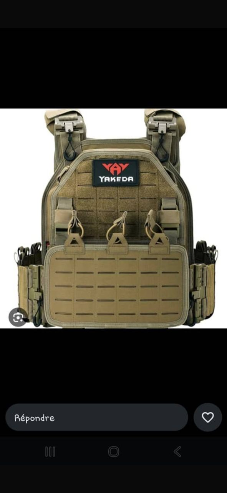
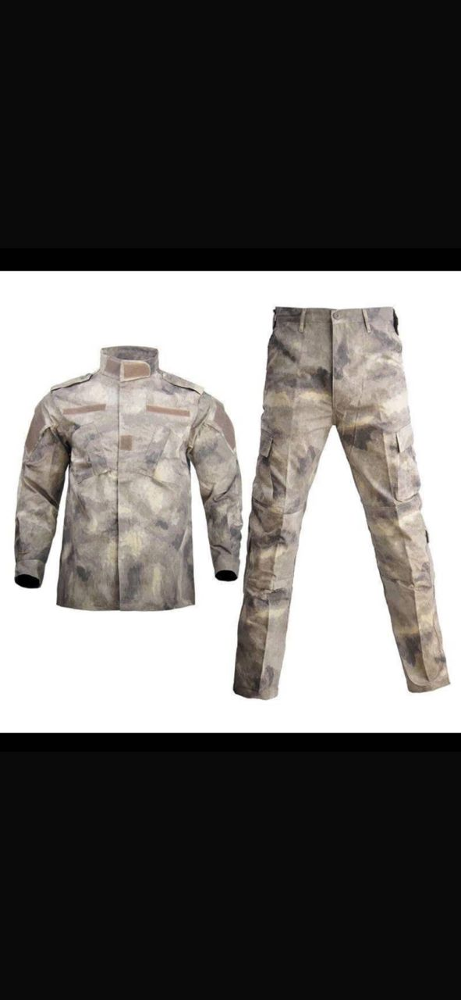
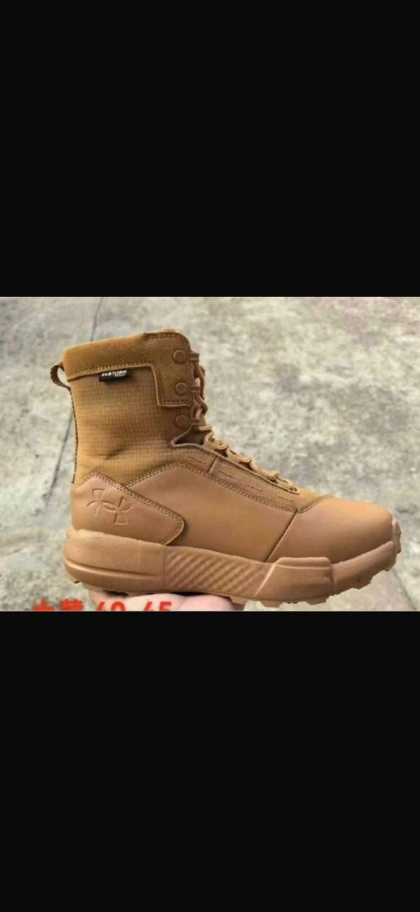
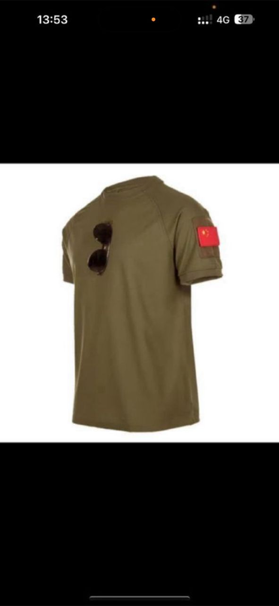

CATALOGUE DE TEXTILES ET D'ÉQUIPEMENTS TACTIQUES

Tenue de terrain résistante aux déchirures, conçue pour offrir un confort maximal dans les climats extrêmes africains.

Gilet porte-plaques ergonomique offrant une protection balistique maximale tout en préservant la mobilité du soldat.

Sac tactique robuste et imperméable pour les missions prolongées, équipé de compartiments d'hydratation.

Chaussures d'intervention légères et antidérapantes, spécialement adaptées aux zones arides et sablonneuses.
Casque de protection léger avec rails latéraux intégrés pour la fixation rapide d'accessoires tactiques.
Gants renforcés offrant une protection supérieure des articulations et une adhérence optimale pour le tir.
Ceinture tactique rigide conçue pour le port sécurisé et confortable d'étuis et d'accessoires lourds.
Protections articulées haute densité pour prévenir les blessures lors des manœuvres au sol et des interventions.